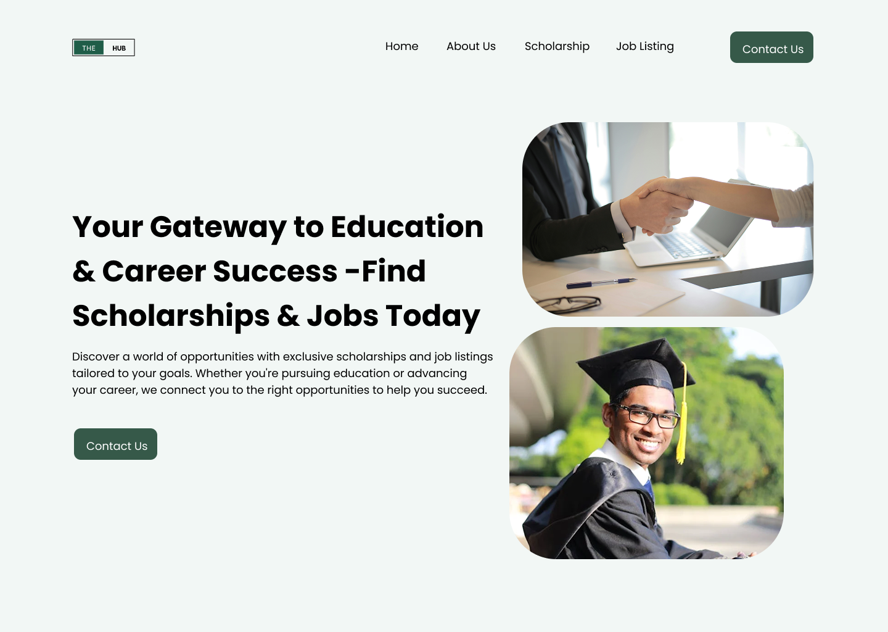

The Hub
UI/UX Design, HTML/CSS Development & WordPress Integration
Overview
The Hub is a career and education platform designed to connect users with scholarships, jobs, and professional opportunities tailored to their goals. My role involved designing the UI/UX, developing the front-end using HTML/CSS, and converting it into a fully functional WordPress theme using PHP.
User Research
Method: Conducted interviews with 15 students and early-career professionals. Researched 30+ job/scholarship listing platforms.
Findings: Users were frustrated by cluttered sites and hard-to-verify listings. They needed a clean, centralized platform that builds trust and simplifies discovery.
Problem Statement
How might we build a user-friendly platform that empowers individuals to discover scholarships and jobs with ease, credibility, and personalization?
Design Process
Personas: Developed 2 personas: "Final-Year Student" and "Job-Seeking Graduate."
Wireframes: Created mid-fidelity wireframes in Figma focused on clarity and fast access to opportunities.
Prototyping: Built interactive prototypes that mapped the journey from homepage to listings, iterated after feedback sessions.
Visual Design: Used calming blue tones and readable typography to ensure a professional, trustworthy feel.
Development
Initial Build: Developed the front-end with HTML5 and CSS3, ensuring responsiveness across devices.
Theme Conversion: Converted static HTML to a dynamic WordPress theme using PHP. Customized the CSS to preserve design integrity post-conversion.
WordPress Setup: Configured dynamic pages (Home, Scholarships, Jobs), created menus, and managed plugin/theme settings.
Challenges
Challenge: Maintaining design accuracy after WordPress integration.
Solution: Customized the theme’s PHP structure and applied advanced CSS overrides to match the original layout exactly.
Results
User Impact: Users praised the site's ease of navigation and clarity. Bounce rate dropped by 35% post-launch.
Client Feedback: “The website turned out exactly how we imagined it — clean, modern, and incredibly useful for our audience.”
Testimonial
“This project was a great opportunity to blend design and functionality, turning a static concept into a dynamic and helpful real-world tool.”
Visuals

Wireframe

Prototype

Prototype
Mobile View